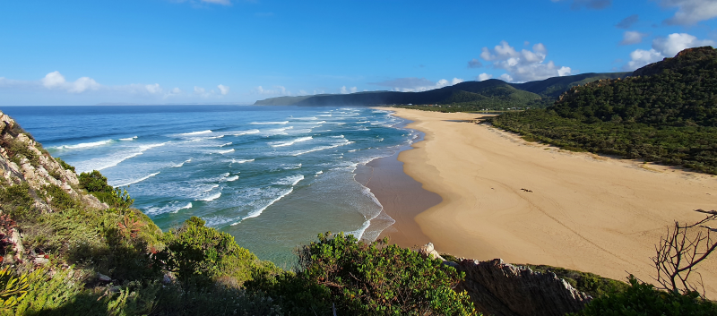
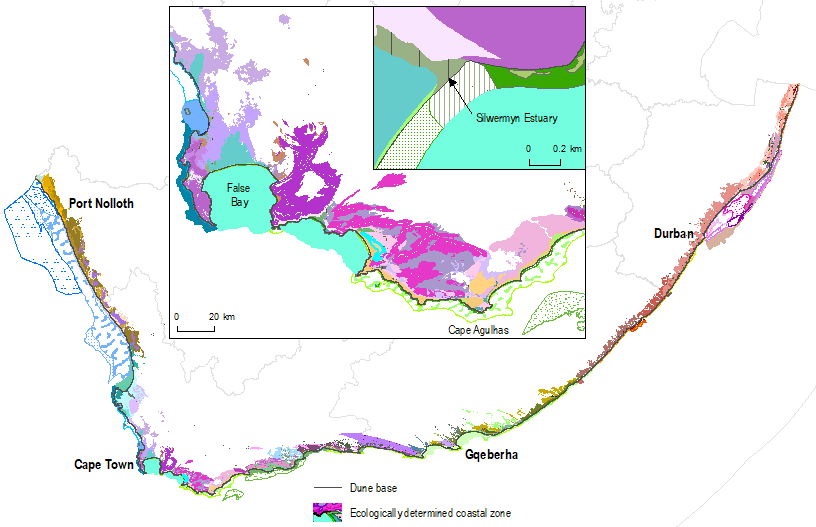

![]()
| Realm | Subrealm | Broad Type | Ecosystem Type |
|---|---|---|---|
| Terrestrial | Semi-coastal vegetation | Albany Thicket | Albany Mesic Thicket |
| Terrestrial | Semi-coastal vegetation | Albany Thicket | Bethelsdorp Bontveld |
| Terrestrial | Semi-coastal vegetation | Albany Thicket | Elands Forest Thicket |
| Terrestrial | Coastal vegetation | Albany Thicket | Goukamma Dune Thicket |
| Terrestrial | Semi-coastal vegetation | Albany Thicket | Gouritz Valley Thicket |
| Terrestrial | Semi-coastal vegetation | Albany Thicket | Grassridge Bontveld |
| Terrestrial | Coastal vegetation | Albany Thicket | Hamburg Dune Thicket |
| Terrestrial | Coastal vegetation | Albany Thicket | Hartenbos Dune Thicket |
| Terrestrial | Coastal vegetation | Albany Thicket | Kasouga Dune Thicket |
| Terrestrial | Semi-coastal vegetation | Albany Thicket | Motherwell Karroid Thicket |
| Terrestrial | Semi-coastal vegetation | Albany Thicket | Sardinia Forest Thicket |
| Terrestrial | Coastal vegetation | Albany Thicket | St Francis Dune Thicket |
| Terrestrial | Semi-coastal vegetation | Albany Thicket | Umtiza Forest Thicket |
| Terrestrial | Coastal vegetation | Desert | Alexander Bay Coastal Duneveld |
| Terrestrial | Semi-coastal vegetation | Desert | Namib Lichen Fields |
| Terrestrial | Coastal vegetation | Desert | Western Gariep Plains Desert |
| Terrestrial | Coastal vegetation | Forests | Mangrove Forest |
| Terrestrial | Coastal vegetation | Forests | Northern Coastal Forest |
| Terrestrial | Semi-coastal vegetation | Forests | Southern Afrotemperate Forest |
| Terrestrial | Coastal vegetation | Forests | Southern Coastal Forest |
| Terrestrial | Coastal vegetation | Forests | Swamp Forest |
| Terrestrial | Coastal vegetation | Fynbos | Agulhas Limestone Fynbos |
| Terrestrial | Coastal vegetation | Fynbos | Agulhas Sand Fynbos |
| Terrestrial | Semi-coastal vegetation | Fynbos | Albertinia Sand Fynbos |
| Terrestrial | Coastal vegetation | Fynbos | Algoa Sandstone Fynbos |
| Terrestrial | Semi-coastal vegetation | Fynbos | Atlantis Sand Fynbos |
| Terrestrial | Coastal vegetation | Fynbos | Canca Limestone Fynbos |
| Terrestrial | Coastal vegetation | Fynbos | Cape Flats Dune Strandveld |
| Terrestrial | Semi-coastal vegetation | Fynbos | Cape Flats Sand Fynbos |
| Terrestrial | Semi-coastal vegetation | Fynbos | Cape Winelands Shale Fynbos |
| Terrestrial | Semi-coastal vegetation | Fynbos | De Hoop Limestone Fynbos |
| Terrestrial | Semi-coastal vegetation | Fynbos | Eastern Coastal Shale Band Vegetation |
| Terrestrial | Semi-coastal vegetation | Fynbos | Elim Ferricrete Fynbos |
| Terrestrial | Coastal vegetation | Fynbos | Garden Route Granite Fynbos |
| Terrestrial | Semi-coastal vegetation | Fynbos | Garden Route Shale Fynbos |
| Terrestrial | Semi-coastal vegetation | Fynbos | Goukamma Strandveld |
| Terrestrial | Coastal vegetation | Fynbos | Groot Brak Dune Strandveld |
| Terrestrial | Semi-coastal vegetation | Fynbos | Grootbos Strandveld |
| Terrestrial | Coastal vegetation | Fynbos | Hangklip Sand Fynbos |
| Terrestrial | Semi-coastal vegetation | Fynbos | Hopefield Sand Fynbos |
| Terrestrial | Semi-coastal vegetation | Fynbos | Humansdorp Shale Renosterveld |
| Terrestrial | Semi-coastal vegetation | Fynbos | Knysna Sand Fynbos |
| Terrestrial | Semi-coastal vegetation | Fynbos | Kogelberg Sandstone Fynbos |
| Terrestrial | Coastal vegetation | Fynbos | Lambert's Bay Strandveld |
| Terrestrial | Coastal vegetation | Fynbos | Langebaan Dune Strandveld |
| Terrestrial | Semi-coastal vegetation | Fynbos | Lourensford Alluvium Fynbos |
| Terrestrial | Semi-coastal vegetation | Fynbos | Mossel Bay Shale Renosterveld |
| Terrestrial | Coastal vegetation | Fynbos | Namaqualand Sand Fynbos |
| Terrestrial | Coastal vegetation | Fynbos | Overberg Dune Strandveld |
| Terrestrial | Semi-coastal vegetation | Fynbos | Overberg Sandstone Fynbos |
| Terrestrial | Coastal vegetation | Fynbos | Peninsula Granite Fynbos |
| Terrestrial | Semi-coastal vegetation | Fynbos | Peninsula Sandstone Fynbos |
| Terrestrial | Semi-coastal vegetation | Fynbos | Peninsula Shale Fynbos |
| Terrestrial | Coastal vegetation | Fynbos | Peninsula Shale Renosterveld |
| Terrestrial | Semi-coastal vegetation | Fynbos | Potberg Ferricrete Fynbos |
| Terrestrial | Coastal vegetation | Fynbos | Potberg Sandstone Fynbos |
| Terrestrial | Coastal vegetation | Fynbos | Saldanha Flats Strandveld |
| Terrestrial | Coastal vegetation | Fynbos | Saldanha Granite Strandveld |
| Terrestrial | Coastal vegetation | Fynbos | Saldanha Limestone Strandveld |
| Terrestrial | Semi-coastal vegetation | Fynbos | Southeastern Strandveld |
| Terrestrial | Coastal vegetation | Fynbos | Southern Cape Dune Fynbos |
| Terrestrial | Semi-coastal vegetation | Fynbos | Southwestern Strandveld |
| Terrestrial | Semi-coastal vegetation | Fynbos | St Francis Strandveld |
| Terrestrial | Semi-coastal vegetation | Fynbos | Tsitsikamma Sandstone Fynbos |
| Terrestrial | Coastal vegetation | Indian Ocean Coastal Belt | KwaZulu-Natal Coastal Belt Grassland |
| Terrestrial | Coastal vegetation | Indian Ocean Coastal Belt | Maputaland Coastal Belt |
| Terrestrial | Semi-coastal vegetation | Indian Ocean Coastal Belt | Maputaland Wooded Grassland |
| Terrestrial | Coastal vegetation | Indian Ocean Coastal Belt | Pondoland-Ugu Sandstone Coastal Sourveld |
| Terrestrial | Coastal vegetation | Indian Ocean Coastal Belt | Transkei Coastal Belt |
| Terrestrial | Semi-coastal vegetation | Savanna | South Eastern Coastal Thornveld |
| Terrestrial | Coastal vegetation | Succulent Karoo | Namaqualand Coastal Duneveld |
| Terrestrial | Coastal vegetation | Succulent Karoo | Namaqualand Heuweltjie Strandveld |
| Terrestrial | Coastal vegetation | Succulent Karoo | Namaqualand Inland Duneveld |
| Terrestrial | Coastal vegetation | Succulent Karoo | Namaqualand Strandveld |
| Terrestrial | Coastal vegetation | Succulent Karoo | Northern Richtersveld Yellow Duneveld |
| Terrestrial | Coastal vegetation | Succulent Karoo | Richtersveld Coastal Duneveld |
| Terrestrial | Coastal vegetation | Succulent Karoo | Richtersveld Sandy Coastal Scorpionstailveld |
| Terrestrial | Coastal vegetation | Succulent Karoo | Southern Richtersveld Yellow Duneveld |
| Terrestrial | Coastal vegetation | Azonal Vegetation | Subtropical Dune Thicket |
| Terrestrial | Coastal vegetation | Azonal Vegetation | Cape Seashore Vegetation |
| Terrestrial | Coastal vegetation | Azonal Vegetation | Namaqualand Seashore Vegetation |
| Terrestrial | Coastal vegetation | Azonal Vegetation | Namib Seashore Vegetation |
| Terrestrial | Coastal vegetation | Azonal Vegetation | Subtropical Seashore Vegetation |
| Estuarine | Estuaries | Estuary | Tropical Estuarine Lake |
| Estuarine | Estuaries | Estuary | Subtropical Estuarine Bay |
| Estuarine | Estuaries | Estuary | Subtropical Estuarine Lake |
| Estuarine | Estuaries | Estuary | Subtropical Large Fluvially Dominated |
| Estuarine | Estuaries | Estuary | Subtropical Large Temporarily Closed |
| Estuarine | Estuaries | Estuary | Subtropical Micro-estuary |
| Estuarine | Estuaries | Estuary | Subtropical Predominantly Open |
| Estuarine | Estuaries | Estuary | Subtropical Small Temporarily Closed |
| Estuarine | Estuaries | Estuary | Warm Temperate Estuarine Bay |
| Estuarine | Estuaries | Estuary | Warm Temperate Estuarine Lake |
| Estuarine | Estuaries | Estuary | Warm Temperate Large Fluvially Dominated |
| Estuarine | Estuaries | Estuary | Warm Temperate Large Temporarily Closed |
| Estuarine | Estuaries | Estuary | Warm Temperate Micro-estuary |
| Estuarine | Estuaries | Estuary | Warm Temperate Predominantly Open |
| Estuarine | Estuaries | Estuary | Warm Temperate Small Fluvially Dominated |
| Estuarine | Estuaries | Estuary | Warm Temperate Small Temporarily Closed |
| Estuarine | Estuaries | Estuary | Cool Temperate Arid Predominantly Closed |
| Estuarine | Estuaries | Estuary | Cool Temperate Estuarine Lagoon |
| Estuarine | Estuaries | Estuary | Cool Temperate Estuarine Lake |
| Estuarine | Estuaries | Estuary | Cool Temperate Large Fluvially Dominated |
| Estuarine | Estuaries | Estuary | Cool Temperate Large Temporarily Closed |
| Estuarine | Estuaries | Estuary | Cool Temperate Micro-estuary |
| Estuarine | Estuaries | Estuary | Cool Temperate Predominantly Open |
| Estuarine | Estuaries | Estuary | Cool Temperate Small Fluvially Dominated |
| Estuarine | Estuaries | Estuary | Cool Temperate Small Temporarily Closed |
| Marine | Shore | Rocky shore | Agulhas Boulder Shore |
| Marine | Shore | Rocky shore | Agulhas Exposed Stromatolite Rocky Shore |
| Marine | Shore | Rocky shore | Agulhas Exposed Rocky Shore |
| Marine | Shore | Rocky shore | Agulhas Sheltered Rocky Shore |
| Marine | Shore | Rocky shore | Agulhas Very Exposed Stromatolite Rocky Shore |
| Marine | Shore | Rocky shore | Agulhas Very Exposed Rocky Shore |
| Marine | Shore | Rocky shore | Cape Boulder Shore |
| Marine | Shore | Rocky shore | Cape Exposed Rocky Shore |
| Marine | Shore | Rocky shore | Cape Sheltered Rocky Shore |
| Marine | Shore | Rocky shore | Cape Very Exposed Rocky Shore |
| Marine | Shore | Rocky shore | Delagoa Very Exposed Rocky Shore |
| Marine | Shore | Rocky shore | Namaqua Exposed Rocky Shore |
| Marine | Shore | Rocky shore | Namaqua Sheltered Rocky Shore |
| Marine | Shore | Rocky shore | Namaqua Very Exposed Rocky Shore |
| Marine | Shore | Rocky shore | Natal Boulder Shore |
| Marine | Shore | Rocky shore | Natal Exposed Rocky Shore |
| Marine | Shore | Rocky shore | Natal Very Exposed Rocky Shore |
| Marine | Shore | Mixed shore | Agulhas Mixed Shore |
| Marine | Shore | Mixed shore | Agulhas Stromatolite Mixed Shore |
| Marine | Shore | Mixed shore | Cape Mixed Shore |
| Marine | Shore | Mixed shore | Delagoa Mixed Shore |
| Marine | Shore | Mixed shore | Namaqua Mixed Shore |
| Marine | Shore | Mixed shore | Natal Mixed Shore |
| Marine | Shore | Sandy shore | Agulhas Dissipative Intermediate Sandy Shore |
| Marine | Shore | Sandy shore | Agulhas Dissipative Sandy Shore |
| Marine | Shore | Sandy shore | Agulhas Intermediate Sandy Shore |
| Marine | Shore | Sandy shore | Agulhas Reflective Sandy Shore |
| Marine | Shore | Sandy shore | Natal Delagoa Dissipative Intermediate Sandy Shore |
| Marine | Shore | Sandy shore | Natal Delagoa Dissipative Sandy Shore |
| Marine | Shore | Sandy shore | Natal Delagoa Intermediate Sandy Shore |
| Marine | Shore | Sandy shore | Natal Delagoa Reflective Sandy Shore |
| Marine | Shore | Sandy shore | Southern Benguela Dissipative Intermediate Sandy Shore |
| Marine | Shore | Sandy shore | Southern Benguela Dissipative Sandy Shore |
| Marine | Shore | Sandy shore | Southern Benguela Intermediate Sandy Shore |
| Marine | Shore | Sandy shore | Southern Benguela Reflective Sandy Shore |
| Marine | Shore | Island | Agulhas Island |
| Marine | Shore | Island | Cape Island |
| Marine | Inner shelf and river influenced | Bay | Eastern Agulhas Bay |
| Marine | Inner shelf and river influenced | Bay | Western Agulhas Bay |
| Marine | Inner shelf and river influenced | Bay | Cape Bay |
| Marine | Inner shelf and river influenced | Bay | False and Walker Bay |
| Marine | Inner shelf and river influenced | Bay | St Helena Bay |
| Marine | Inner shelf and river influenced | Kelp forest | Agulhas Kelp Forest |
| Marine | Inner shelf and river influenced | Kelp forest | Cape Kelp Forest |
| Marine | Inner shelf and river influenced | Kelp forest | Namaqua Kelp Forest |
| Marine | Inner shelf and river influenced | Shallow rocky shelf | Agulhas Inner Shelf Mosaic |
| Marine | Inner shelf and river influenced | Shallow rocky shelf | Agulhas Inner Shelf Reef |
| Marine | Inner shelf and river influenced | Shallow rocky shelf | Aliwal Shoal Reef Complex |
| Marine | Inner shelf and river influenced | Shallow rocky shelf | Cape Rocky Inner Shelf |
| Marine | Inner shelf and river influenced | Shallow rocky shelf | Durnford Inner Shelf Reef Complex |
| Marine | Inner shelf and river influenced | Shallow rocky shelf | Kei Fluvial Fan |
| Marine | Inner shelf and river influenced | Shallow rocky shelf | Kosi Coral Community |
| Marine | Inner shelf and river influenced | Shallow rocky shelf | Leadsman Coral Community |
| Marine | Inner shelf and river influenced | Shallow rocky shelf | Orange Cone Inner Shelf Mud Reef Mosaic |
| Marine | Inner shelf and river influenced | Shallow rocky shelf | Port St Johns Inner Shelf Mosaic |
| Marine | Inner shelf and river influenced | Shallow rocky shelf | Sodwana Coral Community |
| Marine | Inner shelf and river influenced | Shallow rocky shelf | Southern KZN Inner Shelf Mosaic |
| Marine | Inner shelf and river influenced | Shallow rocky shelf | Trafalgar Reef Complex |
| Marine | Inner shelf and river influenced | Shallow rocky shelf | Wild Coast Inner Shelf Mosaic |
| Marine | Inner shelf and river influenced | Shallow soft shelf | Agulhas Sandy Inner Shelf |
| Marine | Inner shelf and river influenced | Shallow soft shelf | Cape Sandy Inner Shelf |
| Marine | Inner shelf and river influenced | Shallow soft shelf | Delagoa Sandy Inner Shelf |
| Marine | Inner shelf and river influenced | Shallow soft shelf | KZN Bight Muddy Inner Shelf |
| Marine | Inner shelf and river influenced | Shallow soft shelf | KZN Bight Sandy Inner Shelf |
| Marine | Inner shelf and river influenced | Shallow soft shelf | Namaqua Sandy Inner Shelf |
| Marine | Inner shelf and river influenced | Shallow soft shelf | St Lucia Sandy Inner Shelf |
| Marine | Inner shelf and river influenced | Deep rocky shelf | Durnford Mid Shelf Reef Complex |
| Marine | Inner shelf and river influenced | Deep rocky shelf | Kei Reef Mosaic |
| Marine | Inner shelf and river influenced | Deep rocky shelf | KZN Bight Mid Shelf Mosaic |
| Marine | Inner shelf and river influenced | Deep rocky shelf | KZN Bight Mid Shelf Reef Complex |
| Marine | Inner shelf and river influenced | Deep rocky shelf | KZN Bight Outer Shelf Mosaic |
| Marine | Inner shelf and river influenced | Deep rocky shelf | Namaqua Mid Shelf Fossils |
| Marine | Inner shelf and river influenced | Deep rocky shelf | Namaqua Muddy Mid Shelf Mosaic |
| Marine | Inner shelf and river influenced | Deep rocky shelf | uThukela Mid Shelf Mosaic |
| Marine | Inner shelf and river influenced | Deep rocky shelf | uThukela Outer Shelf Muddy Reef Mosaic |
| Marine | Inner shelf and river influenced | Deep soft shelf | Agulhas Muddy Mid Shelf |
| Marine | Inner shelf and river influenced | Deep soft shelf | KZN Bight Muddy Shelf Edge |
| Marine | Inner shelf and river influenced | Deep soft shelf | KZN Bight Deep Shelf Edge |
| Marine | Inner shelf and river influenced | Deep soft shelf | Namaqua Muddy Sands |
| Marine | Inner shelf and river influenced | Deep soft shelf | Namaqua Sandy Mid Shelf |
| Marine | Inner shelf and river influenced | Deep soft shelf | Orange Cone Muddy Mid Shelf |
| Marine | Inner shelf and river influenced | Deep soft shelf | Port St Johns Muddy Mid Shelf |
| Marine | Inner shelf and river influenced | Deep soft shelf | Port St Johns Muddy Shelf Edge |
| Marine | Inner shelf and river influenced | Deep soft shelf | St Lucia Sandy Mid Shelf |
| Marine | Inner shelf and river influenced | Deep soft shelf | uThukela Mid Shelf Mud Coarse Sediment Mosaic |
South Africa arguably has one of the most diverse and scenic coasts in the world, supporting a wealth of unique biodiversity. Altogether, there are 190 coastal ecosystem types that comprise the ecologically determined coastal zone (EDCZ). These include 83 vegetation types, 22 estuarine ecosystem types, and 85 marine ecosystem types. Freshwater ecosystem types are not currently included in the EDCZ, but there is planned inclusion in future.

190
Coastal Ecosystem Types
comprising
Coastal Ecosystem Types
comprising
83
Terrestrial
ecosystem types
Terrestrial
ecosystem types
22
Estuarine
ecosystem types
Estuarine
ecosystem types
85
Marine
ecosystem types
Marine
ecosystem types
Defining and delineating the ecologically determined coastal zone
Unlike the terrestrial, inland aquatic, estuarine and marine assessments, all of which assess ecosystem types per realm, the coast assessment is undertaken in a cross-realm zone. The reason for focusing on the coast specifically is because the majority of the world’s population lives in this zone1, concentrating pressures on biodiversity. Unless assessed separately, trends in coastal biodiversity relative to the rest of the land and sea are lost in the individual realm assessments.
There are lots of different definitions and boundaries of coastal zones. For purposes like biodiversity assessments, the extent of the coast needs to comprise whole ecosystem types because that is the unit of assessment. Using whole ecosystem types also means that the results from the separate realm assessments can be extracted and summarized for the coast.
Substantial effort went into delineating an ecologically determined coastal zone (EDCZ) for the National Biodiversity Assessment (NBA) 2018 by seamlessly aligning the separate realm ecosystem maps, and tagging relevant ecosystem types in the terrestrial, estuarine and marine realm as ‘coastal’ based on a set of criteria2. The premise underpinning these criteria is that ecosystem types are considered coastal if they have a direct influence from both the land and sea:
Terrestrial ecosystem types: all vegetation types influenced by the sea, including:
Coastal Vegetation – vegetation types with purely coastal descriptions, and/or with >95% of their extent within 2.5 km of the seashore
Semi-Coastal Vegetation – vegetation types with coastal affinities mentioned in description, and/or with >70% of their extent within 10 km of the seashore
Estuarine ecosystem types: all estuary and micro-estuary types are included in the EDCZ
Marine ecosystem types: all marine ecosystem types influenced by land are coastal, including:
All ecosystem types between the shore and the fair-weather wave base (depth at which ocean waves start to interact with the sea floor)
All river-influenced marine ecosystem types
This criteria-based approach means that as ecosystem maps update per realm, the changes are incorporated in updates of the EDCZ.
South Africa’s coastal ecosystem types
The cool Benguela and warm Agulhas currents that flow around South Africa drive steep gradients in climate and environmental conditions from west to east, resulting in diverse coastal ecosystem types and associated species, many of which are found no where else on earth3. The west coast is cool and arid, and the east coast is warm and wet, with a moderate south coast between them. The biogeography around the South African coast thus ranges from cool temperate in the west, through warm temperate in the south, to subtopical and tropical in the east.
The EDCZ has been updated for the NBA 2025 based on updates to the respective realm maps, and currently comprises 190 ecosystem types3 (Figure 1):
83 vegetation types: dunes and seashore vegetation, strandveld, duneveld, dune thicket, and coastal thicket, forests and fynbos
22 estuary ecosystem types: predominantly open, temporarily closed, and fluvially dominated estuaries, and estuarine lakes, bays and lagoon
85 marine ecosystem types: sandy beaches, shingle shores and boulder shores, mixed shores, rocky shores, microbialites, islands, reefs, kelp forests, bays, hard and soft inner shelf, and river-influenced ecosystem types

Technically, there are an additional three microestuary ecosystem types that are also included in the EDCZ3. However, because microestuaries are not assessed in the National Biodiversity Assessments, they are excluded from the count of coastal ecosystem types in the NBA 2025 content to simplify the statistics and reporting.
Although there is not yet enough information to systematically identify inland aquatic ecosystem types as coastal and non-coastal, this is an area of work that needs more research. There is planned inclusion of freshwater types in future (e.g., freshwater forested wetlands, dune slacks, groundwater, aquifers, seeps and springs, and river–estuary transition zones).
The coastal ecosystem types are listed below (Table 1). For a descriptive overview of these ecosystem types, and inland aquatic ecosystem types proposed to be included in future, refer to the publication.
Technical documentation
Publication
Harris, L.R., Adams, J.B., Dayaram, A., Dunga, L.V., Job, N., Kirkman, S.P., Lamberth, S.J., Pfaff, M.C., Raw, J.L., Rishworth, G.M., Robbins, A., Sink, K.J., Skowno, A.L., van Deventer, H., van Niekerk, L., 2025. Cross-realm biodiversity profile of the South African coastal zone. African Journal of Marine Science 47, 1-18. https://doi.org/10.2989/1814232X.2025.2463342
Description of the different types of coastal ecosystem types and broad biodiversity patterns in the South African coastal zone. The supplementary material includes a glossary of terms, guidance regarding map layers to use, and a table of the ecosystem types and their areas.
Data availability
The following datasets are available for download:
Map of coastal ecosystem types / ecologically determined coastal zone
Dune base line: proxy representation of a decadal-scale high-water mark and recommended ecological line to represent the ‘coastline’
Landmass line: recognized administrative boundary of the South African mainland landmass
Recommended citation
The publication is the preferred citation for this content, otherwise use:
Harris, L.R., Sink, K.J., Skowno, A.L., Van Niekerk, L., & Dayaram, A. 2025. Ecosystem types: Coastal zone. National Biodiversity Assessment 2025. South African National Biodiversity Institute. http://nba.sanbi.org.za/.
References
1. Cosby, A.G. et al. 2024. Accelerating growth of human coastal populations at the global and continent levels: 20002018. Scientific Reports 14: https://doi.org/10.1038/s41598-024-73287-x
2. Harris, L.R. et al. 2019. Advancing land-sea integration for ecologically meaningful coastal conservation and management. Biological Conservation 237: 81–89. https://doi.org/10.1016/j.biocon.2019.06.020
3. Harris, L. et al. 2025. Cross-realm biodiversity profile of the South African coastal zone. African Journal of Marine Science 47: 1–18. https://doi.org/10.2989/1814232x.2025.2463342